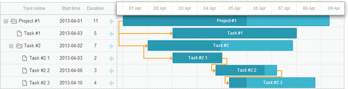
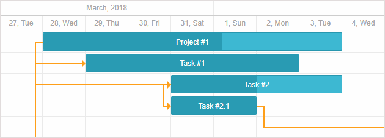
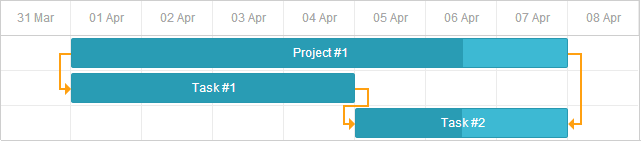
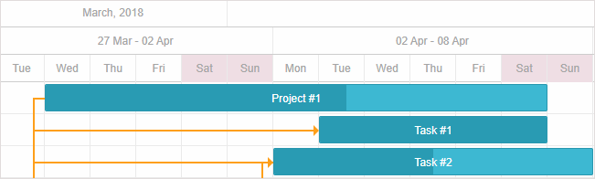

The configuration of scales is specified via the scales property. You can specify any number of scales by setting scale objects in the array of the scales config:
// a single day-scale
gantt.config.scales = [
{unit: "day", step: 1, format: "%j, %D"}
];
// several scales at once
gantt.config.scales = [
{unit: "month", step: 1, format: "%F, %Y"},
{unit: "week", step: 1, format: weekScaleTemplate},
{unit: "day", step:1, format: "%D", css:daysStyle }
];
It is possible to configure the following aspects of the time scale (X-Axis):
You can also add a custom scale.

To set the unit of the scale, use the unit property in the corresponding scale object:
Possible values are: "minute", "hour", "day", "week", "quarter", "month", "year".
gantt.config.scales = [
{unit: "month", step: 1, format: "%F, %Y"},
{unit: "day", step: 1, format: "%j, %D"}
];
gantt.init("gantt_here");

If you don't specify the date range explicitly, Gantt uses the dates of the loaded tasks and adds offsets before the first and after the last task in the scale. The offset is defined by the settings of the time scale. Depending on the scale_offset_minimal value, it will be either the time unit defined in via the unit attribute of the scales option or by the smallest of the time scale units.
You can get the displayed date range programmatically using the getState method.
var state = gantt.getState();
console.log(state.min_date);
// -> Mon Jan 01 2018 00:00:00
console.log(state.max_date);
// -> Tue Jan 01 2019 00:00:00
The scale range is recalculated on gantt rendering. If the user moves a task outside the displayed time range, the task row will be displayed, but the bar element won't be visible until complete repainting is done.
In order to adjust scale automatically, use the fit_tasks config.
gantt.config.fit_tasks = true;
gantt.init("gantt_here");
Related sample: Auto resize scale
Alternatively, you can set the date range explicitly by using the start_date and end_date configuration options:
gantt.config.start_date = new Date(2018, 02, 31);
gantt.config.end_date = new Date(2018, 03, 09);
gantt.init("gantt_here");
They can also be specified in the gantt initialization call:
gantt.init("gantt_here", new Date(2018, 02, 31), new Date(2018, 03, 09));
Related sample: Define date range
The tasks that don't fit into the specified interval won't be displayed in the Gantt chart, unless they are marked as unscheduled.
Related sample: Show Unscheduled Tasks
If both the start_date and end_date options are specified and you create a task that is outside the range, the task will disappear from the chart. To display the task in the chart use the show_tasks_outside_timescale config.
gantt.config.start_date = new Date(2019, 02, 31);
gantt.config.end_date = new Date(2019, 03, 09);
gantt.config.show_tasks_outside_timescale = true;
gantt.init("gantt_here");
In case you don't use this config you can extend the range:
gantt.attachEvent("onLightboxSave", function(id, task, is_new){
var taskStart = task.start_date;
var taskEnd = task.end_date;
var scaleStart = gantt.config.start_date;
var scaleEnd = gantt.config.end_date;
// if the task is out of the range
if(scaleStart > taskEnd || scaleEnd < taskStart ){
// update timescale range
gantt.config.end_date=new Date(Math.max(taskEnd.valueOf(), scaleEnd.valueOf()));
gantt.config.start_date=new Date(Math.min(taskStart.valueOf(),scaleStart.valueOf()));
gantt.render();
}
return true;
});
Or add validation to the lightbox control:
gantt.attachEvent("onLightboxSave", function(id, task, is_new){
var taskStart = task.start_date;
var taskEnd = task.end_date;
var scaleStart = gantt.config.start_date;
var scaleEnd = gantt.config.end_date;
// check if the task is out of the range
if(scaleStart > taskEnd || scaleEnd < taskStart ){
gantt.message({
type:"warning",
text:"Warning! The task is outside the date range!",
expire:5000
});
return false;
}
return true;
});
There are several ways of how you can change the displayed range on the fly:
You can do it by recalculating the scale range via updating the start_date / end_date configs each time gantt is repainted:
gantt.attachEvent("onBeforeGanttRender", function(){
var range = gantt.getSubtaskDates();
var scaleUnit = gantt.getState().scale_unit;
if(range.start_date && range.end_date){
gantt.config.start_date = gantt.calculateEndDate(range.start_date, -4, scaleUnit);
gantt.config.end_date = gantt.calculateEndDate(range.end_date, 5, scaleUnit);
}
});
gantt.init("gantt_here");
gantt.config.fit_tasks = true;
gantt.init("gantt_here");
In case both the start_date and end_date options are specified, you need to make use of one of the options described above for the fit_tasks property to work correctly.
gantt.attachEvent("onTaskDrag", function(id, mode, task, original){
var state = gantt.getState();
var minDate = state.min_date,
maxDate = state.max_date;
var scaleStep=gantt.date.add(new Date(),state.scale_step,state.scale_unit)-new Date();
var showDate,
repaint = false;
if(mode == "resize" || mode == "move"){
if(Math.abs(task.start_date - minDate) < scaleStep){
showDate = task.start_date;
repaint = true;
}else if(Math.abs(task.end_date - maxDate) < scaleStep){
showDate = task.end_date;
repaint = true;
}
if(repaint){
gantt.render();
gantt.showDate(showDate);
}
}
});
Related sample: Re-rendering Scale during Task Dragging
It is possible to show tasks that don't fit into the specified date range in the Gantt chart.
To do this you need to set the show_tasks_outside_timescale config parameter to true:
var data = {
"tasks": [
{"id":1, "text":"Project #1", "start_date": "01-09-2018", "end_date": "02-09-2018"},
{"id":2, "text":"Project #2", "start_date": "01-09-2021", "end_date": "02-09-2021"},
{"id":3, "text":"Task #1", "start_date": "03-02-2020", "end_date": "05-02-2020"},
],
"links":[]
};
gantt.config.show_tasks_outside_timescale = true;
gantt.init("gantt_here", new Date(2020, 1, 1), new Date(2020, 2,1));
Related sample: Tasks outside timescale
As a result the tasks with the id "1" and "2" will be displayed on the page as empty rows in the timeline area and with the specified names and start dates in the grid.
To set the step of the time scale, use the step property in the corresponding scale object:
var monthScaleTemplate = function (date) {
var dateToStr = gantt.date.date_to_str("%M");
var endDate = gantt.date.add(date, 2, "month");
return dateToStr(date) + " - " + dateToStr(endDate);
};
gantt.config.scales = [
{unit: "year", step: 1, format: "%Y"},
{unit: "month", step: 3, format: monthScaleTemplate},
{unit: "month", step: 1, format: "%M"}
];
gantt.init("gantt_here");
To set the height of the scale, use the scale_height property:
gantt.config.scale_height = 54;
gantt.init("gantt_here");
If you have several scales, they will share the specified height equally. For example, if scale_height is 60 pixels and you have 3 scales, each scale will have the height of 60 / 3 = 20 pixels.
See the Date Format Specification article to know about available format characters
To set the format of the scale, use the format property in the corresponding scale object. The format of date can be set as a string:
gantt.config.scales = [
{unit: "month", step: 1, format: "%F, %Y"},
{unit: "week", step: 1, format: weekScaleTemplate},
{unit: "day", step:1, format: "%D", css:daysStyle }
];
gantt.init("gantt_here");
Related sample: Multiple scales

Or as a function that takes a date object as a parameter:
gantt.config.scales = [
{ unit: "day", step:1, format: function(date){
return "<strong>Day " + dayNumber(date) + "</strong><br/>" + dateFormat(date);
}
]
To style the cells of the time scale, use the css attribute in the corresponding scale object.
function getWeekOfMonthNumber(date){
let adjustedDate = date.getDate()+date.getDay();
let prefixes = ['0', '1', '2', '3', '4', '5'];
return (parseInt(prefixes[0 | adjustedDate / 7])+1);
}
gantt.config.scales = [
{unit: "month", step: 1, format: "%F, %Y"},
{unit: "week", step: 1, format: function(date){
return "Week #" + getWeekOfMonthNumber(date);
}},
{unit: "day", step:1, format: "%j %D", css: function(date) { if(!gantt.isWorkTime(date)){
return "week-end";
}
}}
];
Related sample: Styling of cells of the time scale
In case the css property is not specified in the config of the scales, you can define the scale_cell_class template to apply the CSS class to the first time scale of the array of the scales config.
function getWeekOfMonthNumber(date){
let adjustedDate = date.getDate()+date.getDay();
let prefixes = ['0', '1', '2', '3', '4', '5'];
return (parseInt(prefixes[0 | adjustedDate / 7])+1);
}
gantt.config.scales = [
{unit: "month", step: 1, format: "%F, %Y"},
{unit: "week", step: 1, format: function(date){
return "Week #" + getWeekOfMonthNumber(date);
}},
{unit: "day", step:1, format: "%j %D"}
];
gantt.templates.scale_cell_class = function(date) {
if(!gantt.isWorkTime(date)){
return "week-end";
}
};
Related sample: Styling of the first time scale
To apply the scale_cell_class template to all scales of the time scale, set the inherit_scale_class property to true.
gantt.config.scales = [
{unit: "month", step: 1, format: "%F, %Y"},
{unit: "week", step: 1, format: function(date){
return "Week #" + getWeekOfMonthNumber(date);
}},
{unit: "day", step:1, format: "%j %D"}
];
gantt.templates.scale_cell_class = function(date) {
if(!gantt.isWorkTime(date)){
return "week-end";
}
};
gantt.config.inherit_scale_class = true;
Related sample: Styling of all scales
Note that while using work time calculations, you can use isWorkTime instead of hardcoded values:
gantt.config.work_time = true;
gantt.templates.scale_cell_class = function(date){
if(!gantt.isWorkTime(date)){
return "weekend";
}
};
Read more on applying a custom style to the timeline area in the Highlighting Time Slots article.
dhtmlxGantt allows you to define custom time units and set a template for labels in the scale configuration.
To define a custom unit you need to define 2 functions in the Date object:
Date gantt.date.<unit>_start(Date date);
Date gantt.date.add_<unit>(Date date, Integer increment);
Let's create a "fiscal_year" unit and assume that a fiscal year will end on the 31st of January. This is how the new unit can be specified:
var firstMonth = 1,
firstDay = 1;
gantt.date.fiscal_year_start = function(date){ var next = new Date(date);
if(next.getMonth() < firstMonth ||
(next.getMonth() === firstMonth && next.getDate() < firstDay)){
next = gantt.date.add(next, -1, "year");
}
next = gantt.date.year_start(next);
next.setMonth(firstMonth);
next.setDate(firstDay);
return next;
};
gantt.date.add_fiscal_year = function(date, inc){ return gantt.date.add(date, inc, "year");
};
And then use it in the code as in:
var dateToStr = gantt.date.date_to_str("%Y");
function fiscalYearLabel(date){
return dateToStr(gantt.date.fiscal_year_start(date));
};
gantt.config.scales = [
{unit:"year", step:1, format:"Calendar year %Y"},
{unit:"fiscal_year", step:1, format:fiscalYearLabel},
{unit:"month", step: 1, format: "%M %Y"},
{unit:"day", step: 1, format:"%d %M"}
];